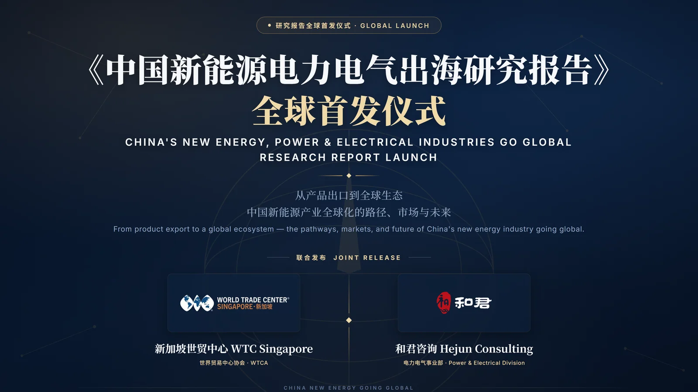

中国新能源电力电气出海研究报告
《中国新能源电力电气出海研究报告》由新加坡世界贸易中心（WTC Singapore）与和君咨询电力电气事业部联合发布，主题为「从产品出口到全球生态」，围绕中国新能源电力电气产业全球化发展的路径、市场格局与趋势展开研究。以下为海鑫汇 GTN 基于报告提炼的出海决策九段式判断——第 1–4 段公开，第 5–9 段留资后解锁。

1. 一句话结论
全球能源转型是当今贸易格局中最具确定性的结构性机遇——IEA 预计 2025 年全球清洁能源投资约 2.2 万亿美元，是中国新能源企业全球化流动的底色。但出海的底层逻辑已经改变：国内产能阶段性过剩、价格战白热化，叠加主要市场贸易壁垒高企，倒逼企业从「产品出口」走向「产能本地化 + 生态全球化」（报告判断一）。一句话结论：市场机会真实且巨大，但胜负手不再是「把产品卖出去」，而是「进入之后能否持续经营」——本地化深度、合规能力与生态协同，决定谁真正走得出去、走得远。
2. 市场机会
报告覆盖光伏、风电、储能、新能源汽车（含动力电池）、氢能五大赛道，需求曲线方向一致向上、形态各异。光伏 2024 年新增装机约 452GW、产业链各环节全球份额超 80%；风电 2025 年新增 164.6GW（同比 +40%）、中国占全球新增约 73%；储能 2025 年电池出货约 550GWh（同比 +79%），中国企业占全球约九成；新能源汽车 2025 年全球销量 2147 万辆（中国渗透率约 55%）；氢能电解槽海外中标占比一年内从约 1% 飙升至 36%。区域呈「三极 + 多点」格局，报告将重点市场分三梯队：第一梯队（加速进入）中东、东南亚；第二梯队（深耕经营）欧洲、拉美；第三梯队（长线培育）非洲、中亚；北美价值最高但壁垒最厚，审慎观察。AI 数据中心引发的「算力—电力」协同（变压器交期已拉长至三年以上）正成为新能源与电力装备出海的第二增长曲线。
3. 真实门槛
出海的真实门槛已从「有没有需求」转为「需求以什么规则释放」。关税壁垒呈「围堵 + 追堵」特征：美国对华光伏综合税率超 109%、电动车 301 关税 100%、锂电池 58.4%，并对东南亚四国、印度、印尼、老挝追补双反；欧盟对华电动车反补贴税 17.0%—35.3%。更隐蔽持久的是非关税壁垒：本地化率要求（沙特 IKTVA、印尼 TKDN、美国 IRA 本土含量）、碳足迹门槛（CBAM 自 2026 年 1 月正式实施、欧盟《新电池法规》电池护照）、认证与并网标准（德国 VDE、英国 G99、美国 UL9540/NFPA855），以及美国 UFLPA 对涉疆供应链的举证责任倒置式审查。报告判断五指出：竞争维度已从产品竞争升级为标准、碳足迹与生态竞争，「合规竞争力」成为继成本之后的新护城河；「换个地方组装」的浅层本地化已不足以应对，必须走向供应链与价值创造的深层本地化。
4. 中国企业案例
报告精选十大标杆案例，覆盖八大赛道与六种出海模式。动力电池龙头宁德时代（2025 年全球市占率 39.2%、连续九年第一）以「德国 + 匈牙利 + 西班牙」集群建厂、对福特技术授权（LRS）轻资产进入美国；比亚迪以「八国工厂」体系战，2025 年海外销量约 105 万辆、从签约到投产平均仅 15—16 个月；晶科能源与沙特 PIF 合资建设 10GW 电池组件产能，中电丰业与沙特 GECI 合资成为首家在中东本地化制造电解槽的中国企业；远景能源以技术授权 + 本地合作切入印度、沙特风电；阳光电源攻克沙特 AMAALA 760MWh 离网储能等高端场景；华为数字能源以「智能光伏 + 构网型储能 + 智能微网」交付红海新城 400MW 光伏 + 1.3GWh 储能；特变电工以「总包 + 制造」拿下沙特 24 亿美元七年框架合同；金盘科技与江苏华鹏演绎变压器出海的「认证 + 本地产能」与「全谱系 + 交付速度」两种范式。成功共性可归纳为五条：本地化是必答题（制造 / 供应链 / 价值三层递进）、资本股权是政治润滑剂、速度是竞争武器、合规是前置投资、生态协同放大生存率。
5. 进入方式（出口 / 代理 / 合资 / 建厂 / 收购）
报告提炼出五种出海模式，需按自身禀赋与目标市场结构化选择。模式一·产品出口与渠道分销：最基础形态，适用于需求分散、壁垒较低的市场（非洲离网、东南亚户储），关键是从依赖贸易商转向自建 / 绑定本地分销网络。模式二·海外建厂与产能本地化：壁垒驱动的主流模式，绿地建厂控制力高但资本强度大、速度慢。模式三·并购整合与合资合作：政治环境下的最优解之一——晶科 × PIF、中电丰业 × GECI 以股权换本地合法性与订单绑定；并购则用于获取品牌、渠道与认证资产。模式四·EPC 总包与「投建营」一体化：电力央国企以 EPC+F / BOT / IPP 深度参与电站开发，收入粘性最强（电站 25—30 年运营期）。模式五·技术标准、品牌与生态出海：最高阶形态，天合光能专利许可、宁德时代 LRS、中国 ChaoJi 充电与换电标准出海，输出「规则资产」。进入方式决策框架取决于四变量：目标市场壁垒高度、自身资源禀赋、东道国股权限制与本地化要求、对控制权的需求——技术敏感环节倾向控股建厂，政治敏感市场倾向合资，品牌成熟市场可用授权。
6. 成本
出海成本不能只看设备报价，而要算「全周期账」。其一，本地化成本爬坡是最大隐性成本：海外工厂投产初期良率与成本往往显著劣于国内，供应链生态不成熟会拉长成本爬坡期——这是海外项目「三个低估」之一。其二，认证与合规是前置投资：CBAM 碳足迹核算、电池护照、并网与消防认证需在投资前投入，但能力建成后即转化为准入资格与绿色溢价。其三，重资产建厂资本强度高（如宁德时代匈牙利工厂规划投资逾 70 亿欧元、比亚迪匈牙利工厂约 400 亿元人民币），并叠加高利率环境下的海外融资成本与汇率汇兑损耗。但成本方程正在反转：当直接出口关税成本超过本地建厂成本，「本地化制造从昂贵的合规变成划算的生意」——中东、东南亚以「资本 + 项目 + 本地化」组合显著降低单 WL 成本。此外，中国企业「签约到投产 15 个月」的速度能力，实质压缩了政策风险敞口，本身就是一种成本控制。
7. 风险
报告以「发生概率 × 影响程度」将主要风险定位为：贸易壁垒升级与扩展（高 / 高，应对优先级最高）、地缘政治与制裁传导（中 / 高）、市场与产业供应链波动（高 / 高）、东道国政策变动（高 / 中）、汇率与汇兑风险（高 / 中）、海外项目执行风险（中 / 中）、技术与标准割裂（中 / 高）。市场端需警惕补贴退坡引发的脉冲式需求（如欧洲户储库存周期、泰国电动车产能超前本地消化）与电力市场化改革带来的收益端不确定性；产业端需防范国内价格战外溢与东道国本土产能成长后的竞争；执行端的高发热点在许可周期（欧洲环评并网以年计）、劳工文化差异与本地化成本爬坡——成功者靠「三个前置」（尽调前置、本地团队前置、保险安排前置），失败者多栽于「三个低估」。技术迭代（如 PERC→TOPCon、固态 / 钠电）还可能造成海外产能「投产即落后」的资产搁浅风险。
8. 进入路径（第 1 / 3 / 6 个月）
报告给出「第一站—跳板站—市场站」三站式全球化路径与分阶段进入时序。第一站以新加坡或香港等国际化枢纽设立区域总部 / 国际业务平台，集中全球资金调度、国际人才与跨境结算能力；第二站以东南亚为跳板站，建立区域供应链、生产制造与本地化运营能力，完成从「中国企业」向「区域企业」的组织转变；第三站面向中东、欧洲、拉美、非洲建立差异化市场站。以一家中型储能企业为例的时序参考：第一年，以产品 + 认证进入欧洲、澳洲等现金流市场，同步完成中东、南非渠道布局；第二年，在中东落地区域组装与服务基地、绑定一两个主权级项目；第三年，评估欧洲本地化组装或并购可行性，并以非洲期权市场小规模试点积累离网经验。核心原则是「现金流反哺战略投入」——用确定性市场的利润供养长周期市场的布局；市场组合上构建「现金流市场（中东、东南亚）+ 战略市场（欧洲）+ 期权市场（非洲、中亚）」三层结构，切忌「撒胡椒面」式全市场铺开，遵循「贸易试水 → 轻资产试点 → 重资产跟进」的阶梯节奏。
9. 海鑫汇判断（适合 / 谨慎 / 不建议）
综合报告的市场梯队与十大判断，海鑫汇 GTN 给出分市场态度：适合——中东（规模与增速兼备、资本充裕、政策友好，是「中国技术 + 中东资本 + 本地资源」三元结构最顺的市场）与东南亚（近岸产能腹地、RCEP 零关税，但需精选国别、警惕泰国等地产能局部过剩）；储能与电力装备（AI 算力驱动的第二增长曲线）亦列为优先。谨慎——欧洲（规则门槛全球最高、但需求确定，适合「合规驱动型」深耕）、拉美（资源与市场并重，但需管理汇率波动与左翼资源民族主义回潮的政策周期）。审慎 / 不建议直接出口——北美价值最高但壁垒最厚，纯中国身份产品与资本基本关闭，仅技术授权（如 LRS）与合规框架下的本土建厂是现实路径，须动态跟踪政策窗口；非洲增速最快但基数小、核心约束是支付能力与主权信用，宜与多边资金结合做长线布局。总体判断：出海已从「可选项」变为「必选项」，但打法必须从单点产品出口升级为「本地化 + 合规 + 生态」的系统能力——这才是穿越壁垒、行稳致远的唯一姿态。
关于本报告
2026 年 9 月 11 日，中国国际服务贸易交易会（服贸会）期间，《中国新能源电力电气出海研究报告》全球首发仪式在北京首钢园展馆世界贸易中心协会（WTCA）专属展区举行。报告由新加坡世界贸易中心（WTC Singapore）与和君咨询电力电气事业部联合发布，主题为「从产品出口到全球生态」，围绕中国新能源电力电气产业全球化发展的路径、市场格局与趋势展开研究，为相关企业拓展海外市场、推进本地化经营提供参考。
报告提出，企业国际化经营正从以产品销售和订单获取为主，逐步延伸至市场进入、渠道建设、服务体系、组织能力以及本地化合作等更深层次的经营环节；从「产品出海」走向「能力出海」，再进一步走向「生态出海」，正在成为中国新能源电力电气企业国际化发展需要关注的重要方向。完整产业研究与趋势判断详见原始报告全文（留资获取）。
关于世界贸易中心协会（WTCA）
世界贸易中心协会（World Trade Centers Association，简称 WTCA）是全球性的国际贸易与投资网络，连接全球 300 多个世界贸易中心，覆盖近 100 个国家和地区，致力于促进国际贸易、投资与商业合作，为企业建立跨境商业连接、拓展国际市场提供网络支持。
关于新加坡世界贸易中心（WTC Singapore）
新加坡世界贸易中心是世界贸易中心协会（WTCA）在新加坡的成员机构，依托 WTC ONE Club、GlobalX、WTC Fund 等业务平台，致力于连接全球资本、创新资源与市场机会，为企业提供跨境资源对接与全球化发展支持。
关于和君咨询
和君咨询创立于 2000 年，先后在北京、上海、深圳成立总部，在赣南森林深处建立和君小镇，是中国本土综合性管理咨询机构之一，秉持「咨询 + 资本 + 商学」一体两翼的业务模式，长期为企业及政府机构提供战略、管理、投融资等专业服务，基于对大势、产业、管理和资本的全面理解和研究，在数十个行业里积累有丰富的案例和经验。
关于和君咨询电力电气事业部
和君咨询电力电气事业部专注电力装备、新能源服务领域，以打造「能源电力行业的高端智库」为定位，以「客户为先，成人达己，共创共享」为核心价值观，依托 20 余年在能源电力行业的积淀、跨领域专家团队及生态资源网络，为央国企、上市公司及创新企业提供战略转型、组织优化、技术创新、营销突破、供应链优化及全球市场拓展等综合解决方案，助力企业在「双碳」目标下抢占技术制高点、重塑产业链价值。
完整报告 ¥800
完整研究报告（¥800）在本页九段式判断之外，进一步包含各赛道市场规模与增速测算、十大标杆案例深度拆解、区域市场进入清单与落地执行模板。提交联系方式后，由海鑫汇 GTN 发送报告全文。
留资解锁全文 →留资即视为同意海鑫汇 GTN 就出海决策与您联系；全文将于确认后发送。